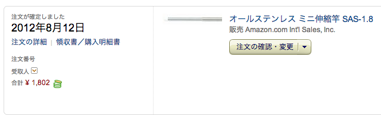
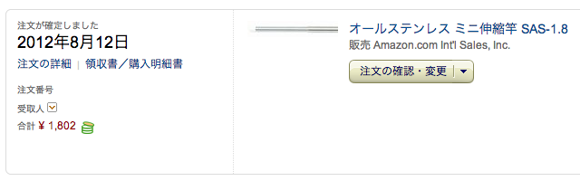
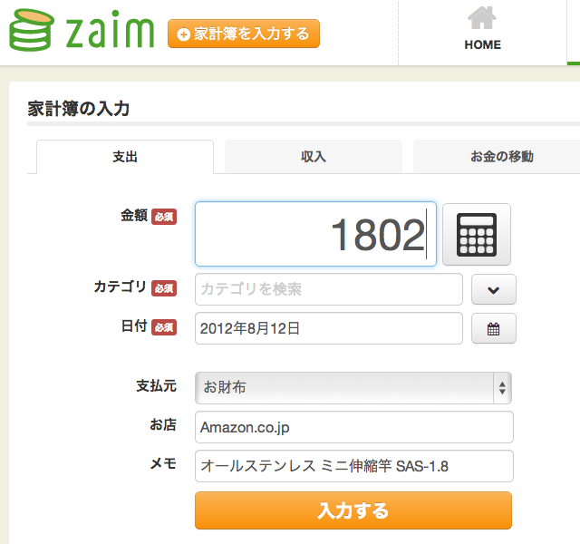
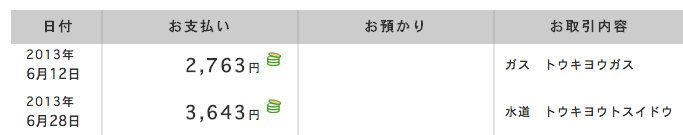
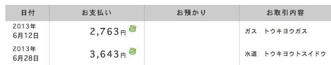
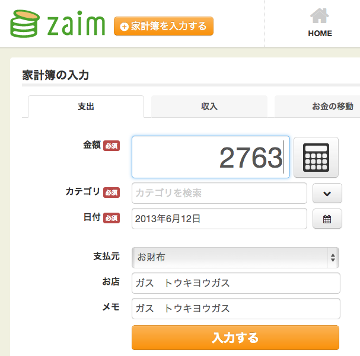
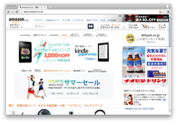
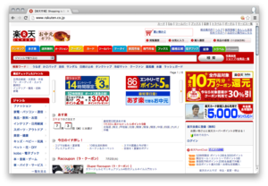
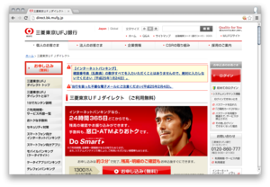
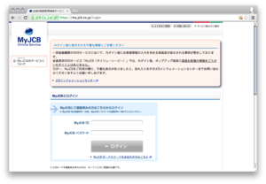

Add To Zaim
Chrome Extension for Zaim.
ECサイトの注文履歴ページ、オンラインバンキングの取引明細、クレジットカードのオンライン利用明細などから、ワンクリックで、金額、日付、お店、メモが入力された状態のZaimWeb版の入力画面を開くことができます。
動作例: Amazon 注文履歴ページ


をクリック
↓
↓

動作例: UFJダイレクト 入出金明細ページ


をクリック
↓
↓

対応サイト
Amazon 注文履歴, 楽天 購入履歴, UFJ Direct 入出金明細, MyJCB カードご利用明細照会



